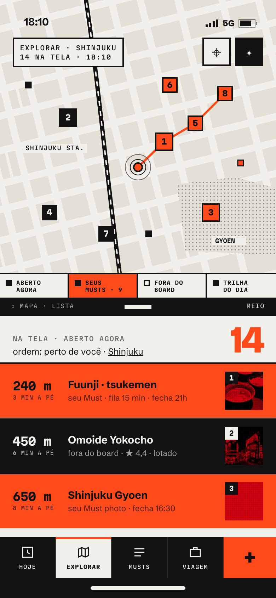
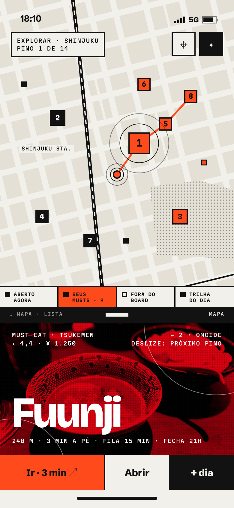
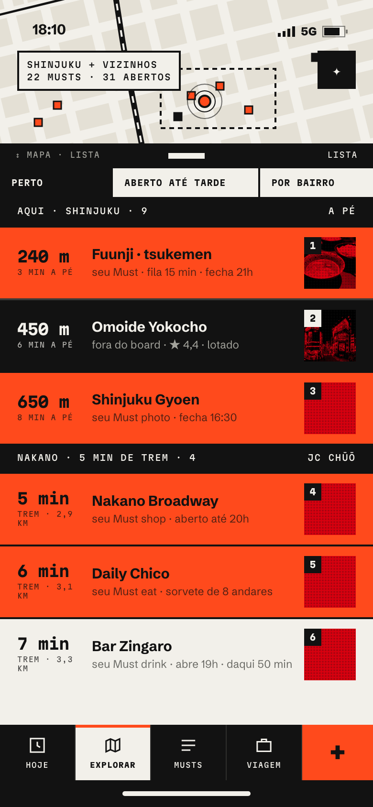
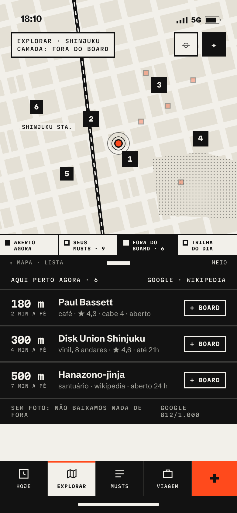
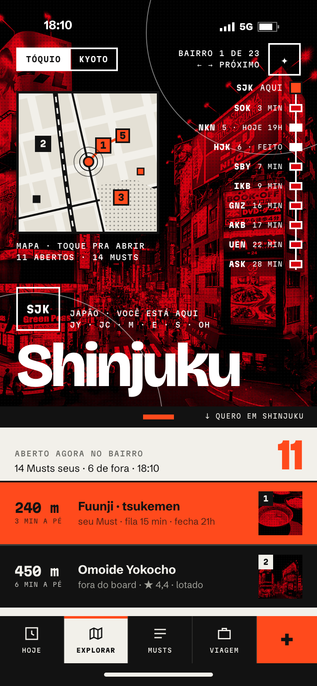
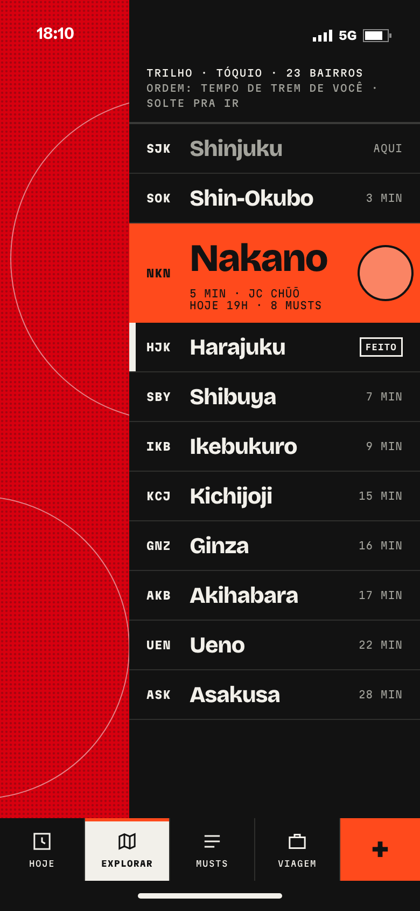
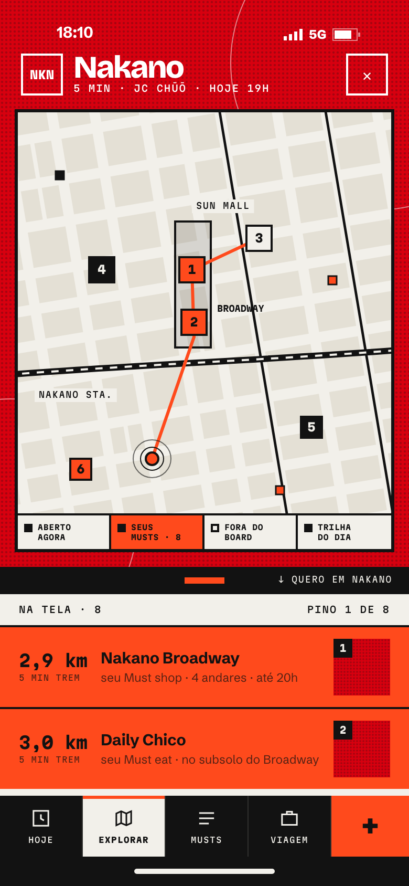
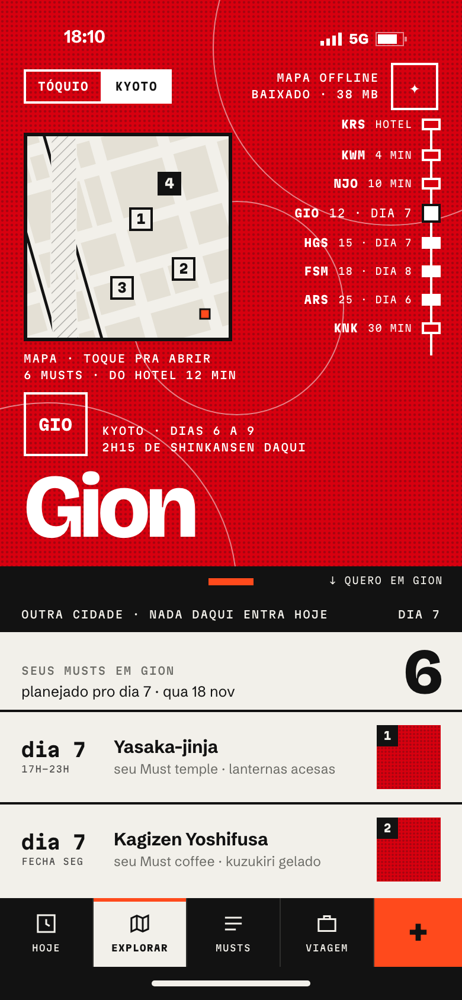

must · v9 · explorar substitui a aba mapa (e a aba guia)
mapLibre com estilo "corte" · pinos do app nenhuma api nova · nenhuma foto nova
Explorar
2
Dois conceitos pro mapa mais inteligente. Os dois usam o corte (bloco, régua, papel), as camadas aberto agora · seus Musts · fora do board · trilha do dia, e pinos quadrados na regra de cor das linhas.
conceito a
O corte móvel
O mapa é o bloco de cima, o índice é o papel. A régua divide os dois e o dedo arrasta a proporção (mapa · meio · lista). O índice é sempre o que está na tela do mapa; tocar num pino transforma o papel no bloco da foto do lugar.

1 · meio a meio camadas em 4 células

2 · mapa cheio pino vira bloco

3 · lista cheia bairro + vizinhos

4 · camada fora do board
a favor
Direto pra "o que tem aqui agora"; zero aprendizado.
Mapa e lista sempre em sincronia (o que está na tela é o que está listado).
Pino vira bloco: sem cartão flutuante, sem sombra.
contra
A régua muda de sentido (aqui redimensiona, no resto abre o quero).
Repete a capa e o quero: "perto agora" já tem duas casas.
Foto só em miniatura; o mapa domina e é a parte menos nossa.
MapLibre vivo o tempo todo (bateria, dados sem pack offline).
conceito b
Bairros como páginas
Cada bairro é uma página de foto em tela cheia, com o mapa como um recorte quadrado dentro do bloco. Deslizar pro lado troca de bairro; o trilho de estações na borda direita pula direto (ordem: tempo de trem de você, bairros de hoje marcados). Tocar no recorte abre o mapa vivo com a foto virando moldura.

1 · página do bairro recorte + trilho

2 · arrastando no trilho

3 · recorte aberto foto vira moldura

4 · outra cidade sem foto, offline
a favor
É o modelo do app: bairro + vizinhos com tempo de trem (Area).
Foto em toda página: o Explorar vira a vitrine do corte.
Trilho = linha de trem + trilha do dia, num gesto novo e óbvio.
Um mapa vivo por vez; recortes são snapshots em cache (offline, baratos).
Absorve a aba Guia sem perder nada.
contra
"Perto de mim agora" fica a um toque (recorte), não na cara.
23 bairros em Tóquio: depende do trilho pra não virar carrossel.
Página de bairro sem foto no disco fica só cor (normal, mas menos rica).
recomendação
B
Fazer o B, com duas peças do A. O Explorar é pra planejar por bairro e descobrir; o "perto agora" já mora na capa e no quero. Páginas de bairro com foto, recorte e trilho de estações dão ao app uma navegação que nenhum outro guia tem e reaproveitam o que já existe (Area, tempos de trem, AreaHeroes, MapLibre).
Do A entram: as camadas em 4 células e o pino que vira bloco no recorte aberto. A régua do recorte continua sendo a do quero (com origem no bairro), então o gesto nunca muda de sentido.
começa emo bairro onde você está (GPS por célula); sem GPS na cidade da viagem, o bairro do dia; viagem futura, o primeiro bairro do dia 1.
trilhosó bairros com Musts ou vizinhos dos dias; marca os de hoje (branco) e "feito"; segurar e arrastar = pular; háptico a cada estação.
recortesnapshot do MapLibre por bairro + camadas, gerado fora do main e guardado em disco; tocar = mapa vivo; sem pack offline, recorte em cache continua.
cidadessegmentado no topo do bloco; outra cidade mostra "nada daqui entra hoje" e ordena pelo hotel, não pelo GPS.